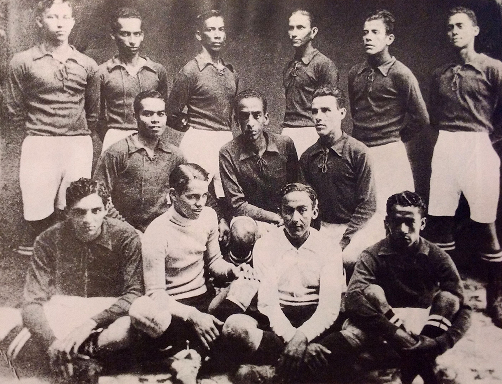
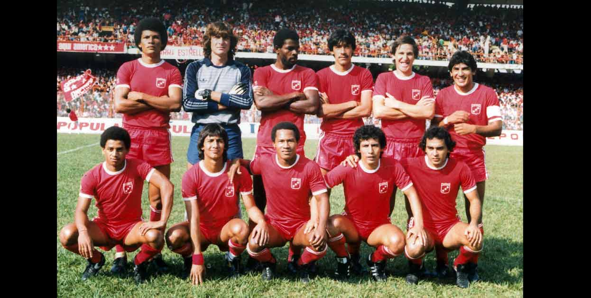

Fundación formal del América 1927

Cuenta la historia que el 13 de febrero de 1927, día que se considera la fecha oficial de fundación, el ‘nuevo’ América jugó un partido contra el equipo de los Hermanos Maristas, en Yanaconas, A las nueve empezó el cotejo; el primer tiempo iba dos-cero a favor del América, tuvieron que dejarse empatar 3-3 para no perder la cerveza y la comida que les habían ofrecido. La precisión en la fecha fue indicada por Benjamín Urrea, uno de los fundadores del cuadro escarlata, quien pasó a la posteridad con el sobrenombre de Garabato.
Nacido el América FC, comenzó a conquistar sus títulos. Pues al año de fundado ganó el campeonato departamental de segunda categoría, derrotando en la partida final al Alférez Real (antes Boyacá), Igualmente había derrotado al Colombia. El primer campeonato de América fue logrado el 29 de septiembre de 1927.
Sobre el nombre y los colores 1928

Según Luis Hernando Lenis, el nombre del equipo nació de un comentario sin importancia hecho por el capitán de la selección uruguaya de 1924. “Un buen nombre para un conjunto es América, manifestó el capitán del cuadro celeste; desde entonces así se llama el onceno rojo de Cali. También dijo Lenis que en una publicación de El Gráfico donde el comentario del cronista, “Los negritos del América parecen unos diablos rojos…”, causó una especial impresión y a partir de ese momento el equipo se empezó a vestir totalmente de rojo.
Otra de las teorías acerca del origen del nombre y los colores, una de la más aceptadas, dice que el nombre fue escogido como homenaje a América Foot Ball Club (el equipo de 1918) y la elección de los colores se debe a que en la gira de 1931 algunos miembros del equipo asistieron, como espectadores, a un partido de baloncesto entre los quintetos de Unión Colombia y los Diablos Rojos. Estos últimos vestían íntegramente de rojo y como consecuencia de ello América determinó seguir jugando de rojo, de arriba abajo, colores que se oficializaron hacia el año 1936.
Primer título Años 70s

La década de los Setenta significaría el comienzo de la era dorada del América. Logros como el primer título del fútbol profesional colombiano, la primera participación en la Copa Libertadores de América y el primer título internacional en la Copa Simón Bolívar (aunque este torneo no fue reconocido por la FIFA, es considerado un torneo oficial al ser organizado por la Federación Venezolana de Fútbol), llegaron en esta época; sin embargo, cabe aclarar que el comienzo de la década fue regular, y que los mejores resultados llegaron al final de la misma.
1970: Gracias al subcampeonato obtenido el año anterior, América participa por primera vez en Copa Libertadores. Sin embargo, debido a la no participación de clubes brasileños en esa edición, América debió enfrentar un escollo mayor, ya que se agrupó a seis equipos de tres países en su grupo, pero manteniendo solo dos cupos para la siguiente fase, misma cantidad de cupos que otorgaban los otros tres grupos, en los cuales solo competían cuatro equipos (dos por país). Fueron sus rivales en primera fase su clásico rival de patio, el Deportivo Cali, y los representativos chilenos Universidad de Chile (quien sería semifinalista) y Rangers de Talca, así como los paraguayos, Guaraní y Olimpia. La participación fue modesta, ya que el conjunto escarlata no superó la primera ronda. En cuanto al torneo nacional América no logró clasificar al cuadrangular final, tras quedar décimo en el apertura y quinto en el clausura.
1971-1977: Salvo en 1974, cuando logró el segundo puesto del finalización y avanzó al hexagonal final y rematando último, América no tuvo intervenciones importantes en el torneo colombiano. Su mayor logro durante este periodo fue ganar el título de la Copa Simón Bolívar en el primer semestre de 1976, de la mano del entrenador Antonio d’Accorso, logrando así un importante título de aquel torneo amistoso internacional que en esa edición incluyó además clubes de Venezuela, Ecuador y Bolivia.
1978: Superando el segundo lugar de 1974, que hasta esa fecha era la mejor participación, América consigue por primera vez en su historia acabar primero del Torneo Finalización, logrando así un cupo para los cuadrangulares semifinales. La falta de jerarquía influyó en que los Diablos Rojos no pudiesen llegar al grupo que disputaría el campeonato, pues no supo mantener victorias que se le escaparon en los últimos minutos. Finalizaría último de su cuadrangular, a un punto del segundo.65 El técnico fue el uruguayo Víctor Pignanelli, quien jugara en América durante parte de la década del 60. Pignanelli se marchó algo molesto con los directivos americanos, debido a que éstos entraron en conversaciones a final de año con el argentino Juan Carlos Lorenzo cuando el contrato del charrúa aún no se había vencido (finalizaba el 31 de diciembre). Finalmente Lorenzo, quien ganara en ese año la Copa Libertadores con Boca Juniors, no aceptó el cargo y el 12 de diciembre se conoció que el reemplazo de Pignanelli sería el médico Gabriel Ochoa Uribe.
1979: Tras 31 años de haberse iniciado el fútbol profesional colombiano, América consiguió su primer título en lo que es considerado el año más importante de la historia del club. Bajo la conducción técnica de Gabriel Ochoa Uribe, los Diablos Rojos fueron segundos del Apertura y ganaron el Finalización. En los cuadrangulares semifinales América culminó segundo del grupo A, con lo cual se aseguró un cupo en el cuadrangular final. Tras 3 victorias, 2 empates y 1 derrota, América se coronó campeón del torneo nacional y el subcampeón fue Independiente Santa Fe. El último partido fue ante el Unión Magdalena, el 19 de diciembre. Una victoria 2-0, ante un estadio excesivamente lleno, le dio el tan anhelado título al elenco escarlata.
La nómina que alcanzó el campeonato contaba con excelente jugadores, tales como Luis Alegría Valencia, Aurelio José Pascuttini, Gabriel Chaparro, Luis Eduardo Reyes, Wilson Américo Quiñónez, Carlos Alfredo Gay, Juan Manuel Battaglia, Gerardo González Aquino, Víctor Lugo, Jorge Ramón Cáceres y Alfonso Cañón, entre otros. La fecha de la consecución del título pasaría a ser un hito en la historia americana. “Aquel 19” es el nombre con el cual los fanáticos americanos bautizaron ese día. Una canción homónima fue interpretada por Alberto Beltrán, convirtiéndose con el tiempo en un himno para la hinchada escarlata.
Pentacampeonato Años 80s

La década de los 80s fue una de las mejores épocas del América, ya que ganó cinco títulos nacionales consecutivos entre 1982 y 1986 y 3 subcampeonatos consecutivos de Copa Libertadores en 1985, 1986 y 1987. Su peor figuración en el torneo nacional fue tercero, además incorporó algunas de las más grandes figuras nacionales y extranjeras que haya tenido el fútbol colombiano y llegó a conformar la nómina más costosa del continente.
1980: América empezó bien el año. Aunque no obtuvo el título fue segundo del Apertura, tercero del Finalización y tercero del torneo nacional. Tuvo grandes figuras del fútbol como el arquero uruguayo Ladislao Mazurkiewicz y Carlos Horacio Miori; realizó también una buena campaña en Copa Libertadores donde por primera vez alcanzó las semifinales.
1981: De nuevo obtiene el tercer puesto en el campeonato nacional, contrata algunas de las figuras más importantes de su historia como Julio César Falcioni y Roque Alfaro, además gana por primera vez el torneo Apertura y ocupa el puesto 7 del Finalización.
1982: Por segunda vez en su historia América se coronó campeón nacional, esta vez contra Millonarios en Bogotá. Además, por primera vez en Colombia, ganó el torneo Apertura, el Finalización y el Octogonal Final. En esta temporada se vincula quien a la postre sería el goleador histórico, el samario Antony de Ávila.
1983: El club logró el segundo título consecutivo, en una serie reñida con el Junior de Barranquilla y el Atlético Nacional. América contó con una de las incorporaciones más importantes de la historia del conjunto rojo, Willington Ortiz, quien fue traspasado del Deportivo Cali por una cifra desconocida. Además conservó a jugadores como Humberto Sierra, quien años después pasó al fútbol chileno, para jugar en Deportes La Serena. Este año también alcanzó las semifinales de la Copa Libertadores.
1984: El cuarto título nacional lo logró América otra vez contra Millonarios.69 En esta temporada incorporó a otras figuras estelares como los peruanos César Cueto y Guillermo La Rosa, además debuta en el primer equipo Alex Escobar. Por segunda vez ganó el Apertura (Copa de La Paz), el Finalización y el Octogonal final que daba el título del año. También superó la marca de 22 fechas de invicto de 1967, logrando ahora 23 fechas. En Copa Libertadores la participación no fue de las mejores ya que no superó la primera fase.
1985: El quinto título nacional es logrado contra el Junior de Barranquilla por la mínima diferencia con gol de Juan Manuel Battaglia. El equipo fue primero del torneo Finalización, y en el Octogonal final logró un triunfo valioso en el penúltimo partido frente al Deportivo Cali, que lo dejó a tiro de as para dar su quinta vuelta olímpica como efectivamente sucedió. Fue también la primera ocasión en que un arquero colombiano salió campeón con los Diablos Rojos defendiendo la valla escarlata, y ese honor le correspondió a Reynel Ruiz. Para este año América contrató los servicios de los internacionales Ricardo Gareca y Roberto Cabañas. Es un importante año ya que también obtuvo el subcampeonato en Copa Libertadores por primera vez donde fue vencido por Argentinos Juniors. En el partido de ida en Buenos Aires ganó Argentinos Juniors 1-0 y en el de vuelta en Cali ganó América por igual marcador con gol de Willington Ortiz. El tercer partido de desempate se jugó en Asunción y quedó empatado 1-1. El partido se definió desde el punto penal, donde fue victorioso Argentinos Juniors. Un dato curioso es que Julio César Falcioni era el jugador escogido para patear el último penal del América, pero a último momento el arquero argentino se negó y le tocó a Antony de Ávila, quien falló el cobro y de esa forma se perdió la final. Valga también señalar que el árbitro de este encuentro, el chileno Hernán Silva, validó un movimiento irreglamentario del cancerbero Enrique Vidallé que le permitió detener el cobro del joven samario.
1986: Por sexta vez campeón estableciendo la marca de 5 títulos consecutivos; el título fue conseguido contra el rival de patio, Deportivo Cali y nuevamente en férrea disputa con éste y con Millonarios. Otra vez es subcampeón de la Copa Libertadores de América, esta vez contra River Plate de Argentina. El equipo argentino fue superior al América en esa ocasión y ganó los dos partidos, con una destacada actuación de Juan Gilberto Funes.
1987: América es subcampeón del torneo colombiano, superado por Millonarios y también alcanza por tercera vez consecutiva la final de la Copa Libertadores, contra Peñarol de Uruguay. El primer partido en Cali lo ganó América 2-0 con goles de Battaglia y Cabañas y el segundo Peñarol lo ganó 2-1 en Montevideo con el descuento de Cabañas. El partido de desempate se jugó en Santiago de Chile donde América era campeón hasta los últimos 10 segundos del partido cuando Diego Aguirre anotó el 1-0 a favor de Peñarol y de esa forma América perdió su tercera final de Copa Libertadores. Cabe resaltar que para desplazarse a Chile el América tuvo que pasar por varias dificultades, por ejemplo el avión en que iba a viajar se dañó y el equipo tuvo que dormir en el aeropuerto, después en el hotel no había reservaciones y el equipo pasó todo el día en el aeropuerto de Carrasco. Debido a esta serie de inconvenientes que se presentaron, se empezó a hablar de sabotaje, pero nada se comprobó.
1988: Otra regular temporada. Terminó tercero del torneo nacional superado por Millonarios y Atlético Nacional. También alcanzó las semifinales en la Copa Libertadores donde fue eliminado por Nacional de Uruguay.
1989: El torneo pasó a la historia por el asesinato del árbitro Álvaro Ortega. América ganó las dos fases del todos contra todos (los torneos Apertura y Finalización) y fue tercero de la Copa Colombia la cual ganó el Santa Fe. Cuando se encontraba en disputa de la semifinal del campeonato colombiano se produjo el homicidio del árbitro Ortega, lo cual provoca la cancelación del torneo. En esta temporada se incorporó al equipo el goleador colombiano Sergio Angulo.